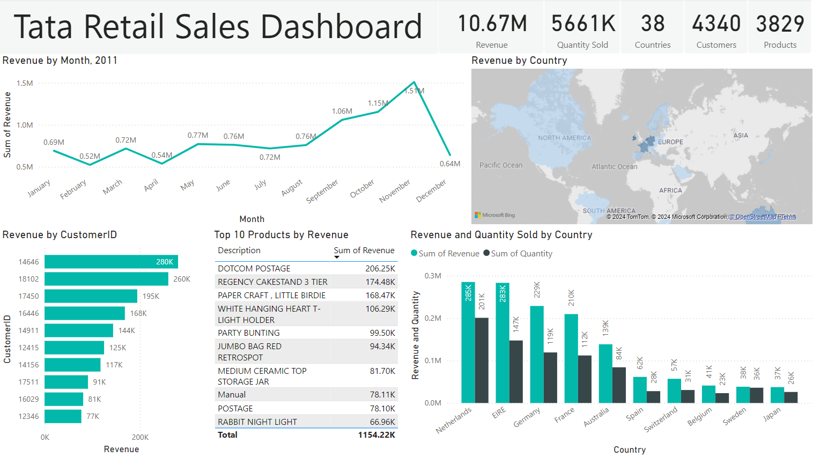
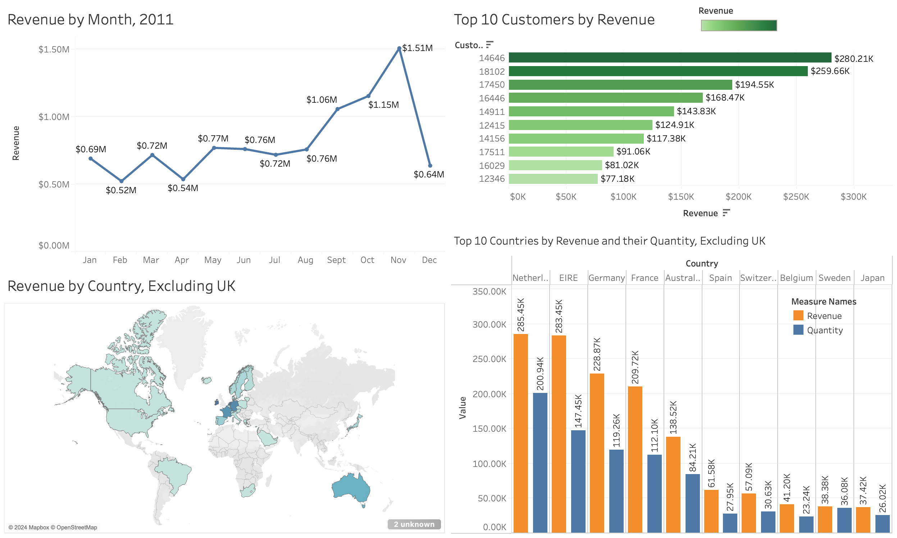
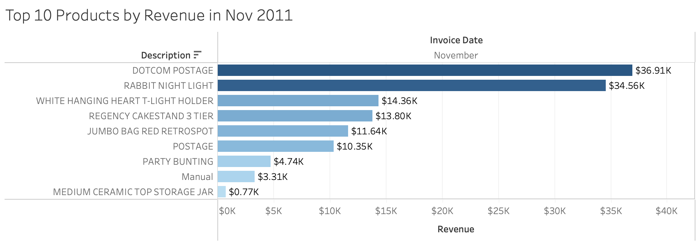
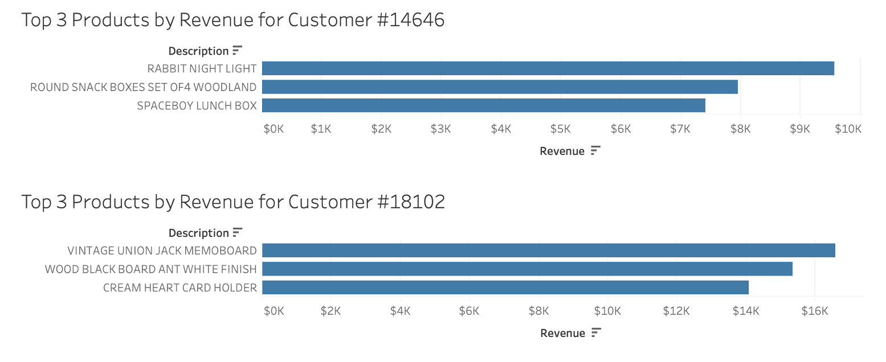

KPI Data Analysis & Visualization in Power BI & Tableau
Virtual Internship by Tata Group on the Forage platform


Objective
Analyze and present business data for an online retail store to assist in performance evaluation and strategic expansion planning. Specific tasks include:
- Review retail data to provide insights valuable to the CEO and CMO
- Identify metrics for understanding revenue contributors and evaluatiing business performance
- Choose right visuals for the metrics and create them
- Communicate insights & analysis to CEO and CMO
Dataset
- Online Retail Orders
- Fields: InvoiceNo, StockCode, Description, Quantity, InvoiceDate, UnitPrice, CustomerID, Country
- Preprocessing: filtered out Quantity less than 1 and negative UnitPrice in data load
Fields Description:
| Field | Description |
|---|---|
| InvoiceNo | invoice ID - an invoice may have multiple products - one CustomerID per invoice |
| StockCode | product ID |
| Description | product description |
| Quantity | number of products sold (negative = returns) |
| InvoiceDate | date of product sold |
| UnitPrice | unit price of product sold |
| CustomerID | customer ID - some NULL |
| Country | country in which sale happened |
Visualizations & Insights
1) Monthly revenue trend for 2011 to identify seasonality
- Viz choice: line chart
- Create a calculated field
`Revenue` = `Quantity` * `UnitPrice` - Findings:
- Revenue in first 8 months is fairly constant, with average about $685K.
- Revenue starts to increase in Sept with 40% rise over the previous month.
- The trends peak in Nov where it reaches $1.51M.
- Data is incomplete for December, so no conclusion can be drawn.
- Insights:
- Identify the reasons for seasonality and increase in revenue in the last 4 months of year.
- Knowing the seasonality helps plan inventory management and any targeted campaigns.

The top 10 products in Nov which generated the most monthly revenue include some party-related goods: night light, cakestand, and party-bunting.
This could be related to the holiday events at year-end.
2) Top 10 Countries by Revenue & Their Quantity to identify growth opportunity
- Viz choice: Side-by-side bar chart
- UK is excluded as the country already has high demand established.
- Findings:
- Top revenue-generating countries are Netherlands, Ireland, Germany, and France.
- Revenue and sales volume seems to have positive correlation.
- Insight:
- Merketing team can continue to target the top countries for further growth.
- Japan is the only Asian country in the top 10 result. Identifying reasons for success in Japan can be helpful in building expansion strategy for Asian countries.
3) Top 10 Customers by Revenue
- Viz choice: bar chart
- Findings:
- Among top 10 revenue-generating customers, the revenue contribution is somewhat concentrated in the top 2 customers (ID 14646, 18102).
- The top customer contributes $280K of total revenue, which is close to the level by top countries such as Netherland and Ireland. They each generated around $285K.
- From the size of average monthly revenue, the business seems to be not too dependent on the top few customers.
- Insight:
- The bargaining power of customers is low, and the business is in good position.
- Top products bought by Customer #18102 includes memoboard and blackboard, which seems to be supllies for enterprise level.
- Understanding the customer composition of private and enterpise would help build targeted marketing strategy.
- Identifying their purchase pattern, whether frequent or one-time, is also a useful insight.

4) Global Revenue Map
- Viz choice: map chart
- UK is excluded from the data for the same reason as above.
- Findings:
- Most of the top revenue-generating countries are only in European region. The other regions, Australia, Asia, Americas, Africa, and Russia all have low revenues.
- Insight:
- Brand penetration seems to be high in European region, but the same cannot be said to the rest of the world.
- Pursuing expansion strategy in other areas may require different strategy than in European region, but could seeks for potentially higher growth boost.
Reflections & Next Steps
Further Improvements
- Make tooltip in charts dynamic by including a bar chart of top selling products by country, month, or customers being hovered over.
- Visualize the percentage of users who made repeated orders and only made one-time purchases.
- For customers who made repeated orders, identify how long it tooks them to make another order. This would provide appropriate timing to suggest next purchases for existing customers.